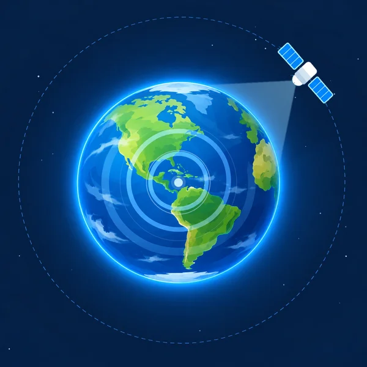

NASA Space Apps · NISAR challenge
The satellite that sees through clouds.
NISAR is a radar satellite from NASA and ISRO. It scans the ground day and night, in any weather. RadarLens shows what changed.

Sees through cloudsRadio waves pass through cloud and smoke.
Works day and nightIt makes its own signal, so it needs no sunlight.
Spots changeCompare two passes to see what moved.
Pick a change to explore
Each card opens a before and after view.